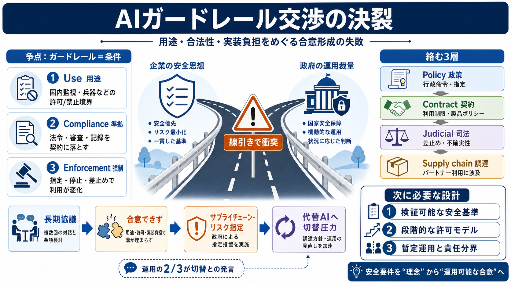

Anthropic sues the Pentagon after being labeled a threat to national security | Fortune
It’s the latest development in an ongoing disagreement between the Pentagon and Anthropic over the Trump administration’…

ガードレール交渉、決裂
AI安全の「利用条件（ガードレール）」をめぐる交渉がこじれ、行政判断として「サプライチェーン・リスク」指定へ進んだ出来事です。
何が争点か
問題は技術だけでなく、「どんな用途まで許すか」「誰が最終判断を持つか」という運用の価値判断です。
ガードレール＝条件
ここでの「ガードレール（ガードレール/rail）」は、技術的制御だけでなく“用途・手続き・責任”まで含む枠組みです。
絡む3つの層
読み解きの基本は、政策判断（法律/行政命令）・企業の契約/製品ポリシー・裁判所（差止め等）が同時進行で摩擦を生む点です。
交渉の相手
WSJ報道では、AnthropicのCEO Dario Amodei と、防総省の次官補 Emil Michael の間で長期間の交渉が行われたとされています。
争点は、センシティブ用途の線引き、合法性解釈、そして契約上のコンプライアンス要求が運用に落とせるかに集中していました。
3つの折れ点
つまり理念（安全）と運用裁量（国家安全保障判断）がぶつかり、合意に至らなかった構図です。
交渉→政策へ
合意できない段階で「サプライチェーン・リスク」指定が出ると、利用可否が短期間で揺れ、契約調整から政策的措置へ格上げされます。
実務の衝撃
Michaelの発言として、防総省運用の「2/3」が他のAIへ切り替わったとされ、現場影響が大きいことが示されています。
見立て（利点と限界）
企業の安全姿勢と政府の運用裁量の双方に合理性はあり得ますが、本報道だけでは妥当性を確定できません。
次に必要な設計
今後は、(1)安全要件の検証可能化、(2)段階的合意モデル、(3)司法判断までの暫定運用（代替・責任分界）をあらかじめ用意することが重要です。
It’s the latest development in an ongoing disagreement between the Pentagon and Anthropic over the Trump administration’…
## The Wall Street Journal's Post. ### **The Wall Street Journal**. New court documents released in one of Anthropic's l…
Artificial intelligence company Anthropic filed a lawsuit against the Trump administration Monday challenging the Pentag…
# The emails that broke Anthropic and the Pentagon apart. Court documents released this week lay bare the back-and-forth…
# Anthropic sues Pentagon to remove 'stigmatizing' AI supply‑chain risk label. Anthropic sues Pentagon over 'stigmatizin…